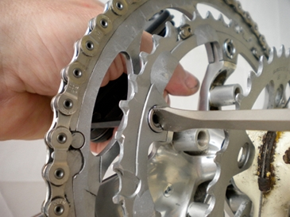

| Replace chainrings |
|
| Written by BikeFixer |
|
Steps 1. Remove right crank arm 2. Remove chainrings, smallest first 3. Fit new chainrings |
|
Not always necessary, depending on which chainring you want to replace, but all rings are easier to access once they are off the bike (see 'Remove cranks and bottom bracket' article). |
||||
If you have 3 rings at the front, you may need to remove the smallest ring first to get access to the larger two. Using a 'chainring tool' to hold the inner, frame-side of the chainring nut still, unscrew the chainring bolt from the outward-side using an allen key. A chainring tool fits the slots in the nut perfectly - large flat-bladed screwdrivers sometimes work, but you may also give yourself or your bike a good scrape. As you remove the ring, check the orientation of the ring with respect to the crank arm - some chainrings have ridges or markers to align with the crank arm. |
||||
|

Undo chainring nut with tool |
||||
Buy kit?Tools you need for this fix. |
Ads. Selected by BikeFixer | |
 |
Buy Chainring Tool |
 |
Reviewsfuturascoop: 2 or 3 chainrings is often only a little mroe expensive than just one, and they should all wear out. I replace the whole lot, rather than just one |
||||
About BikeFixerBikeFixer is a co-op of bikers and web designers.
|
||||
SourcesThe books below are tremendously helpful, but there is a lot of material to get through.
SponsorshipTop10bikefixes is going for gold with Velo Club de Trabail - “Chapeau” to past, present and future members. If they knew how to fix their bikes, they would not keep the rest of the team waiting around!
|
||||